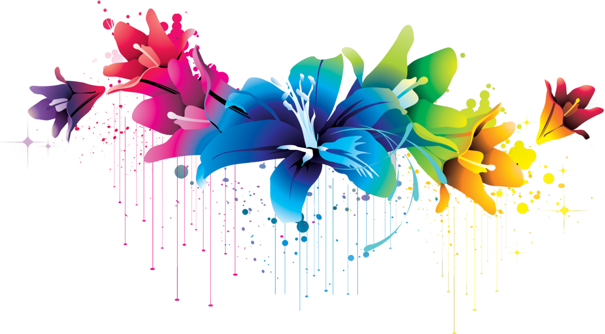

a Survivor.
My scars remind me that I did indeed survive my deepest wounds.
Everyone wants to become a better person, but some people just don’t know how.
At the end of each day, I like to reflect and see what I can do to become a better person. Not only that, but I have a goal of leaving an imprint on the world for doing great things. By setting aside some time each day to reflect on what
behaviors were good and bad, I have the opportunity to grow.
Growing up, I wasn’t the nicest kid. I would make fun of others, I was selfish, and I thought the world revolved around me. Fast-forward a few years and I’ve grown tremendously. I’m no longer the annoying child I was because I have grown and
learned what becoming a better person means.
After learning what it means to be a better person, I’ve been able to develop my persona into someone I don’t mind being. I am a lot happier with who I am and I would have no problem telling my kids the type of person I am today.
So, how to be a better person?
In order to become a better person, you have to be willing to change. Change is the only way to grow and progress into the person you want to become. Many people are against change, which can make it very hard to grow. When you keep an open mind and are willing to change, you are able to grow into the person you want to become.
I would never blame myself for things that went wrong. Instead, I learned that taking accountability for your own mistakes is extremely important. I stopped making excuses, took the blame when it was truly my fault, and was able to achieve so much more. By understanding that I made a mistake, I was able to use my mistakes to learn which in turn helped me become a better person..
It's not so simple: We often believe that we do love ourselves, and yet our actions and reactions suggest otherwise. Loving yourself is essential to your personal growth, to the fulfillment of your dreams, and to developing healthy, happy relationships with others.
We can share our experiences of strengh and hope:
CONTACT ME